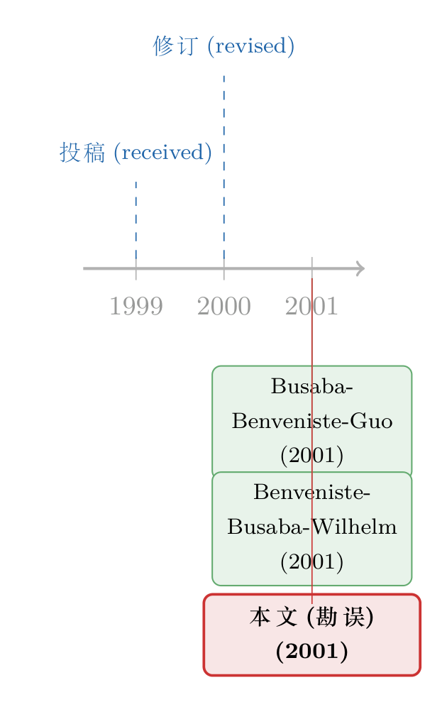

一个被「1」吃掉的减号，差点把整篇论文的结论说反了
本文读的是 Busaba, Benveniste & Guo (2001, JFE) 的一则勘误 (erratum)：原文 Table 5 里，一个本该是 −0.235（t 值 −2.89）的回归系数，被排版成了 10.235（t 值 12.89）；另一个 −0.156 被印成 10.156。一个被「1」顶替掉的减号，不只是让数字变丑，而是把这篇论文最核心的那个负向关系，硬生生翻成了正的。
1 引言：一张表里那个「不合群」的数字
先做个思想实验。假设你翻开 2001 年那一期 Journal of Financial Economics，读到一篇研究新股发行的论文，停在第 94 页的 Table 5——一张再标准不过的横截面回归表。表里的系数老老实实地待在一个很窄的区间里：价格修正 ADJUST 是 0.122、0.104、0.111；正向修正 P_ADJUST 是 0.430 到 0.623；连交叉项 WPROB*P_ADJUST 也不过是 −0.919、−1.052。所有数字，要么在 0 上下零点几，要么是个不大的负数。
然后，你的目光扫到 WPROB 那一行的某一格，看见一个数字：10.235，t 值 12.89。
你会不会愣一下？在一张所有系数都挤在 [−1, 0.6] 之间的表里，突然冒出来一个 10.235，配着一个高到离谱的 t 值——这就像一队身高一米七的人里，站进来一个报了「十米三」的。它太扎眼了，扎眼到任何一个读表的人都该停下来问一句：这是真的吗？
但它就这么印出来了，印在顶刊上，过了校样、过了审稿、过了编辑，安安静静地待了几个月，直到作者们自己回过头来，发了一则勘误把它捉了出来。
这篇「论文」本身只有两页，正文不到三百字。可它讲的，恰恰是实证金融里最不该被忽视、却又最容易被忽视的一件事：一个符号的重量。
2 被顶替的减号
我们先把这则勘误说的事讲清楚。它一共改了三处，前两处都是同一种病：
P. 94, Table 5（续）：
- WPROB 行的某个系数，原印为 10.235、t 值 (12.89)，应为 −0.235、t 值 (−2.89)；
- 另一列 WPROB 的系数，原印为 10.156，应为 −0.156。
看出来了吗？−0.235 和 10.235，差别只在第一个字符：一个是减号「−」，一个是数字「1」。(−2.89) 和 (12.89) 也一样。换句话说，在排版的某一道工序里，那个细瘦的减号被错认、错排成了一个「1」。于是 −0.235 摇身一变成了 10.235，−2.89 变成了 12.89。
第三处错的是参考文献——第 101 页的第四条，应该是 Benveniste, Busaba & Wilhelm (2001) 那篇讲信息外部性的文章。这一条无关痛痒，我们略过。真正要命的是前两处。
为什么要命？因为这不是把 0.235 印成了 0.236 那种「数值漂移」的小错。它改变的是符号。 一个负号没了，结论的方向就反了。这一点，比数字本身大了几十倍这件事，还要严重。
（顺带一提，金融学界对这种「符号被弄反」的事故并不陌生。一篇讲投票联盟的治理论文，也曾因为两个手滑的减号差点把好人钉成坏人，可参见《两个手滑的减号，差点把「投票联盟」钉成了坏人》；还有人为了在计数数据里「留住那些零」，反而把结论的符号弄反，见《为了留住那些「零」，我们把结论的符号弄反了》。)
3 这个减号，恰恰是论文的命门
要理解这个负号有多重要，得先知道 WPROB 是什么、它本该长成什么样子。
这篇原文叫《The option to withdraw IPOs during the premarket: empirical analysis》——「新股在预销售期撤回发行的期权」。它的核心思想，承袭自 Benveniste 一脉的簿记建档 (bookbuilding) 理论：承销商在簿记建档过程中，要靠抑价 (underpricing) 去「买」机构投资者的真实需求信息；可发行人手里还攥着另一张牌——撤回 (withdraw) 发行的权利。如果路演反应太冷，发行人可以干脆不发了。这张「随时可以走人」的期权，提升了发行人在谈判桌上的筹码，于是它本该降低为换取信息而付出的抑价。
WPROB 就是这篇论文估出来的「撤回概率」——一只新股有多大可能被撤回。按照上面的逻辑，撤回倾向越高的发行，抑价应该越低。也就是说：
WPROB对抑价的系数，理论上必须是负的。
现在你明白那个减号的分量了。−0.235 这个值，配着 −2.89 的 t 值（对应 p 值 0.004），是在替这篇论文最核心的命题作证：撤回期权确实压低了抑价，而且显著。 这正是作者想要的结果。
可一旦它被印成 +10.235、t 值 +12.89，故事就彻底翻了个面：读者会得出「撤回概率越高，抑价反而越高、而且高到天上去」的结论——这不仅与论文的全部论证背道而驰，数值本身（一个十倍于其他所有系数的怪物）也荒谬到不可能为真。
更要命的是，这个错并不孤单。把整行 WPROB 的系数排在一起看，它的负号是成体系的：
| 设定 | WPROB 系数 |
t 值 | p 值 |
|---|---|---|---|
| Model 1 | −0.263 | −2.31 | 0.021 |
| Model 2 | −0.235 | −2.89 | 0.004 |
| Model 3 | −0.156 | −2.39 | 0.017 |
| Model 4 | −0.107 | −1.71 | 0.088 |
| Model 5 | −0.123 | −2.10 | 0.037 |
再加上交叉项 WPROB*P_ADJUST 也是稳稳的负数（−0.919、−1.052，t 值 −2.97、−3.42）——整篇论文的证据链，从头到尾都在说同一个负向故事。那个被印成正的 10.235，是这条链子上唯一一个崩开的环。它越是显眼，越说明它一定是错的。 勘误要做的，不过是把这一环重新焊回去。
（关于簿记建档里「用抑价买信息」的机制，本博客有更细的展开，可参见《新股「打折」的真正理由，不是让你说真话，而是先让你肯掏钱》。）
4 一则勘误，照见了实证科学的两个软肋
把这件小事放大来看，它其实戳中了实证研究的两处软肋。
第一处，是校对这道防线有多脆。 你可能会想：一个 10.235、t 值 12.89 的数字，跟全表格格不入，作者、审稿人、编辑、排版，这么多双眼睛，怎么会一个都没拦住？可现实就是没拦住。原因恰恰在于，人读表时看的是「模式」，不是「每一个字符」。 大脑会自动把一行数字理解成「一串系数」，而不会逐位去核对每个减号是不是真的减号。越是格式化、越是密集的数据表，越容易藏住这种字符级的错误。这也是为什么，符号错误往往不是被「读」出来的，而是被作者复算、或被后人复现时才「算」出来的。
第二处，更深一层：结论对一个字符的依赖，本身就是一种风险。 我们写论文时，总以为结论是被数据、被识别策略、被稳健性检验撑起来的。但在「印出来」这最后一公里，结论的方向其实悬于一个个孤零零的符号之上。一个减号在传抄、转码、排版的任何一环里掉了，读者拿到的就是一个符号相反的世界。学术出版的纠错机制——勘误、更正、乃至撤稿——存在的意义，正是给这条脆弱的最后一公里上一道保险。（同一本 JFE 上，也有作者因为一次时间对齐的失误，亲手撤回了自己的「公司债四因子」论文，那是比勘误更重的自我纠错，见《一篇被作者亲手撤回的 JFE》。）
所以，别小看这两页纸。它不是论文，却是论文得以被信任的前提：科学之所以可信，不在于它从不犯错，而在于它会把自己犯的错，公开地、署名地、写进同一本期刊里改回来。
5 文献脉络：一篇论文的「一生」
这则勘误没有自己的文献谱系——它要纠正的，是另一篇论文。所以这里我们换个角度，把这条「脉络」画成原文与勘误的生命周期：从一篇稿子被收到，到它被改对，中间隔了多久、经过哪些环节。
原文的页脚老老实实记着三个日期：1999 年 7 月 13 日收到投稿，2000 年 6 月 9 日收到修订稿，2001 年 1 月 17 日正式接受。然后在 2001 年，它发表于 JFE 第 60 卷（73–102 页）。同年，承载着那两个错印减号的纸面付印；也是同年，作者与出版方在第 61 卷（477–478 页）登出这则勘误，连同那篇 Benveniste, Busaba & Wilhelm (2001) 参考文献的更正，一并补上。

从投稿到发表，整整两年半的打磨；而那个被「1」顶替的减号，却在最后一道工序里悄悄溜了进去。这或许正是这则勘误最朴素的提醒：论文最薄弱的地方，往往不在它最费力推敲的识别策略里，而在它最不设防的排版校样上。
6 评论与延伸（Q&A + 研究方向）
(a) 几个可能的疑问
Q：这不就是个排版错误吗，值得专门读一篇？
值得，因为错的是符号而不是数值。把
0.235印成0.236无伤大雅；把−0.235印成10.235，则是把论文核心命题的方向整个说反了。对实证研究而言，符号常常就是结论本身。这则勘误的价值，正在于它把「结论悬于一个字符之上」这件事，摆到了台面上。
Q：那么多双眼睛，怎么会漏掉一个十倍于全表的怪数字？
因为人读表看的是模式而非字符。大脑把一行系数当成一个整体来理解，不会逐位核对每个减号。越是密集、格式化的数据表，越容易藏住字符级的错误——它通常不是被「读」出来的，而是被复算或复现时才「算」出来的。
Q：改了符号，论文的结论会不会被推翻？
恰恰相反——改对了符号，结论才成立。
−0.235、t 值−2.89支持「撤回期权降低抑价」这一核心命题，与整行WPROB的负号、以及WPROB*P_ADJUST的负交叉项完全自洽。被错印的那个正值，才是与论文论证矛盾的孤例。勘误是修复，不是颠覆。
Q：WPROB 为什么理论上应该是负的？
按簿记建档逻辑，承销商靠抑价向机构投资者「购买」真实需求信息；而发行人撤回发行的期权提升了其谈判筹码，从而减少为换取信息所需支付的抑价。所以撤回倾向（
WPROB）越高，抑价应越低——系数为负。
Q：勘误 (erratum) 和撤稿 (retraction) 是一回事吗？
不是。勘误纠正的是不影响主要结论的局部错误（这里改对符号后，论文反而更自洽）；撤稿则针对足以动摇核心结论的错误或不端。两者都是学术出版自我纠错机制的一部分，但严重程度天差地别。
Q：从识别的角度，这则勘误有没有改变原文的可信度？
没有触及识别。它只修了印刷层面的两个字符与一条参考文献，回归设定、样本、识别策略一概未动。它影响的不是「这篇论文做得对不对」，而是「读者读到的是不是作者真正算出来的那个数」。
(b) 几个可能的研究问题与提案
1. 给顶刊表格做一次「越界系数」体检。
【经济故事】本文那个 10.235 之所以是错的，线索就在于它远远偏离了同列其他系数的分布。如果把这个直觉做成一个自动审计规则——标记那些数量级或符号与同表、同列其他系数严重不一致的数字——能否在大规模文献里捞出更多类似的字符级错误？【可行性】中。需要对大批 PDF 表格做结构化解析（OCR + 表格识别误差不小），并设定合理的异常阈值；技术上可行，难点在解析精度与误报率。
2. 把「撤回期权」搬到公司债发行市场。 【经济故事】股票发行人可以撤回 IPO，债券发行人同样可以在路演反应不佳时推迟或取消发行。这张「撤回期权」是否也压低了公司债的发行折价（underpricing）？机制与本文一脉相承，但信用市场的投资者结构、簿记方式都不同，结果未必平移。【可行性】中。需要 Mergent FISD / SDC 的发行层数据，外加被撤回/推迟发行的记录（这部分较难系统获得），识别上可借鉴本文构造「撤回概率」的思路。
3. 勘误本身有没有信息含量？ 【经济故事】一篇论文发了勘误，是否预示着它后续被引用得更少、或更可能被进一步更正/撤稿？换句话说，勘误是不是论文「质量信号」的一种？【可行性】高。Crossref、Retraction Watch 等数据库已能把勘误、更正、撤稿与原文链接起来，配合引用数据即可做事件研究式分析，数据现成、识别清晰。
4. 符号错误对元分析 (meta-analysis) 的污染。 【经济故事】若一个被错印为正的系数进入了某篇综述或元分析的系数池，它会把合并后的效应往哪个方向拽、拽多少？【可行性】中。需要锁定一组有公开勘误记录的论文，重做包含/剔除错误版本的元分析对比；样本量可能偏小，但作为方法论警示足够有力。
7 参考文献
- Busaba, W. Y., Benveniste, L. M., Guo, R.-J. (2001). The option to withdraw IPOs during the premarket: Empirical analysis. Journal of Financial Economics 60(1), 73–102.
- Busaba, W. Y., Benveniste, L. M., Guo, R.-J. (2001). Erratum to: 'The option to withdraw IPOs during the premarket: Empirical analysis'. Journal of Financial Economics 61(3), 477–478.
- Benveniste, L., Busaba, W., Wilhelm, W. (2001). Information externalities and the role of underwriters in primary equity markets. Journal of Financial Intermediation, forthcoming.